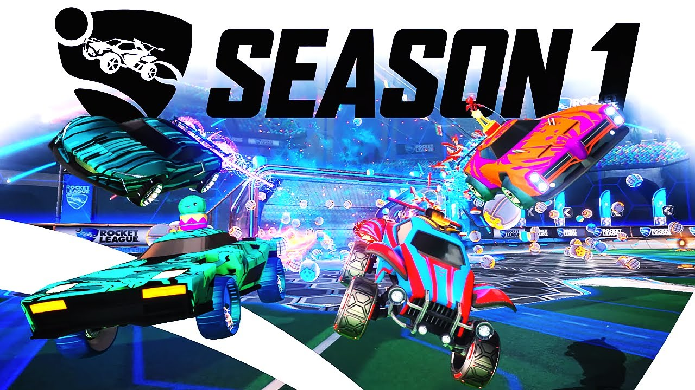
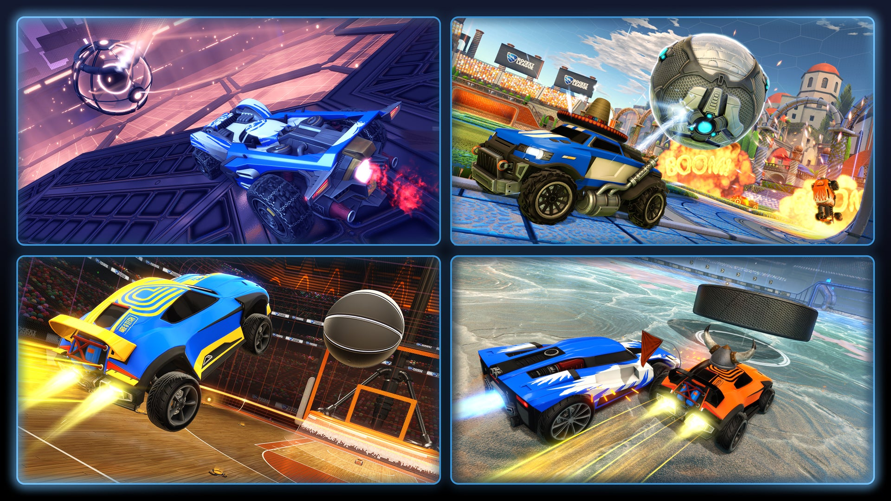
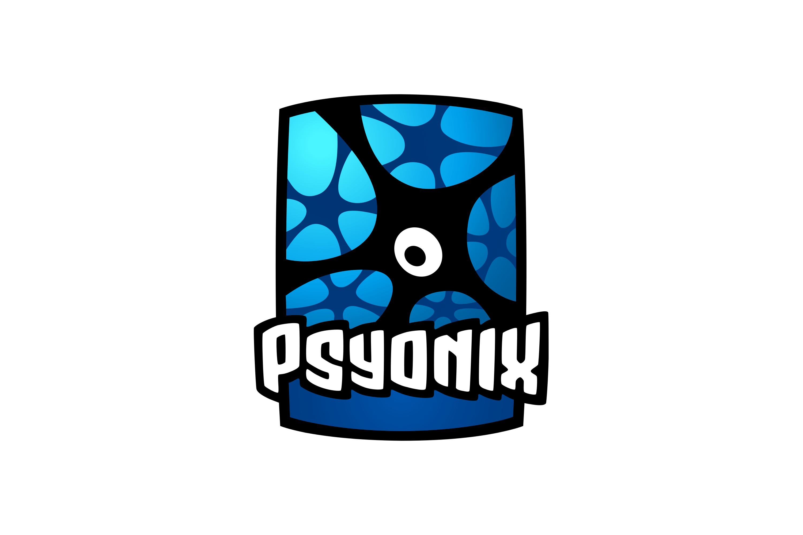

Rocket League – historia
Rocket League är ett unikt spel som kombinerar fotboll med raketdrivna bilar. Spelet utvecklades av Psyonix och släpptes den 7 juli 2015 till PC och PlayStation 4, innan det senare kom till fler plattformar. Idén bakom spelet är enkel men innovativ: spelare styr bilar som ska skjuta en boll i motståndarens mål, vilket skapar en snabb, actionfylld spelupplevelse som är lätt att lära sig men svår att bemästra.


Rocket League blev snabbt en enorm framgång efter lanseringen. Tack vare att det var gratis via PlayStation Plus vid release fick det miljontals spelare på kort tid. Spelet har sedan dess fått många uppdateringar, inklusive nya spellägen som basket (Hoops), hockey (Snow Day) och kaoslägen som Rumble, samt kosmetiska föremål och säsongssystem. År 2020 blev spelet dessutom free-to-play, vilket ytterligare ökade spelarbasen.
Bakom spelet står alltså Psyonix, ett amerikanskt spelutvecklingsföretag som grundades i början av 2000-talet. Studion arbetade länge med andra projekt innan Rocket League slog igenom och förändrade företagets framtid. Framgången blev så stor att företaget 2019 köptes upp av Epic Games, vilket ledde till ännu större satsningar på spelet och dess esport.


En viktig del av Rocket Leagues framgång är dess esport-scen. Redan 2016 startade Rocket League Championship Series (RLCS), som snabbt växte till en av de största tävlingarna inom spelet. Turneringar har hållits världen över med stora prispotter och hundratusentals tittare online. Esporten har fortsatt att utvecklas med nya format, regionala ligor och världsmästerskap som lockar både spelare och publik globalt.
Idag räknas Rocket League som ett av de mest populära och unika sportspelen i världen. Kombinationen av enkel spelidé, hög skicklighetstak och stark esport-scen har gjort att spelet fortsätter vara relevant många år efter sin lansering.